The Fractal Wave Universe
I understand the universe as a fractal wave. To explain what I mean, I must first describe both fractals and waves:
Fractals

A fractal is an infinitely recursive (self-repeating) pattern. Through repetitive scaling, simplicity leads to seeming complexity. Fractals aren't truly complex because the same information can be used to describe each scope of the pattern.
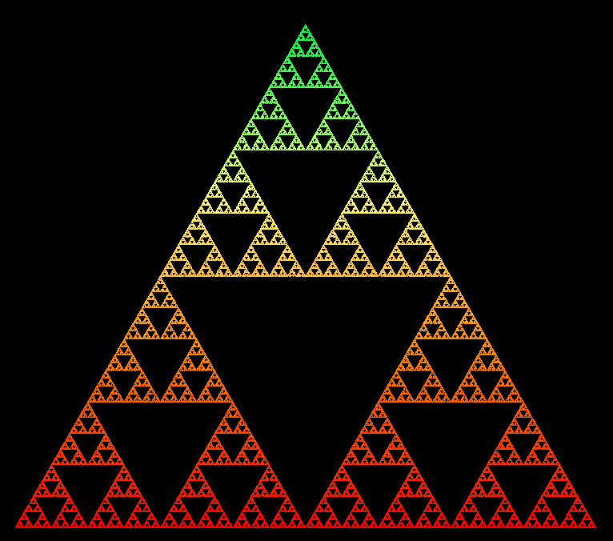
Obvious fractals are abundant in nature, in the forms of trees, mountains, rivers, hurricanes, galaxies, and more. Here are some examples:
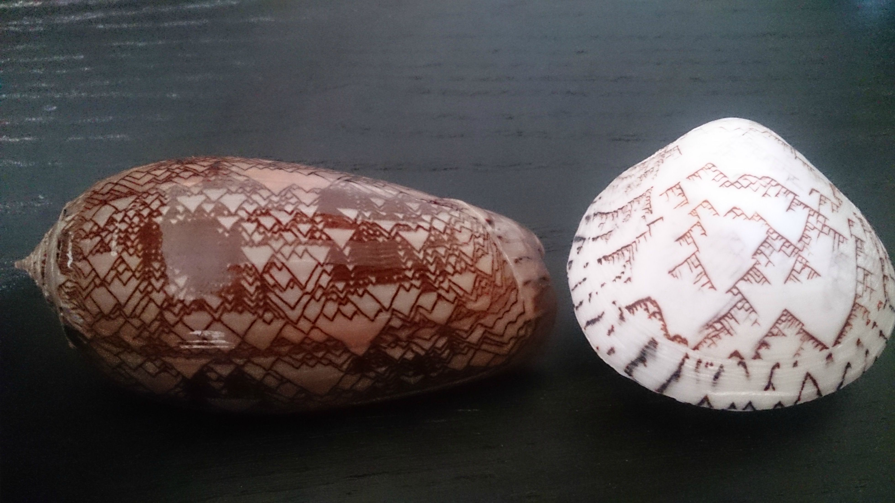
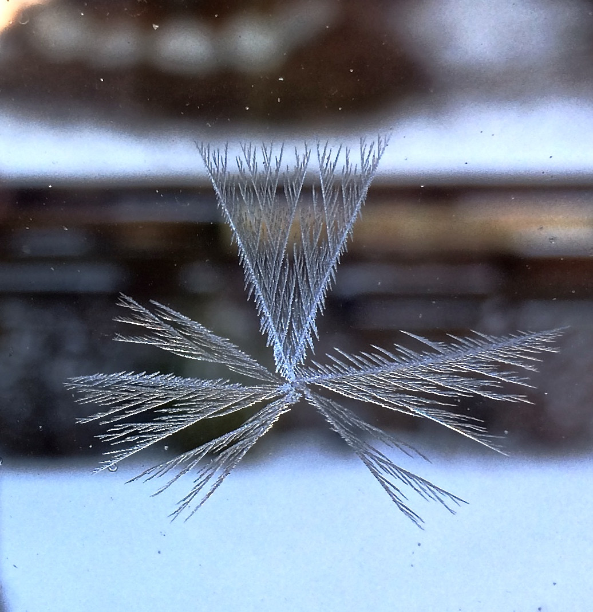
Gallery - Google Earth Fractals
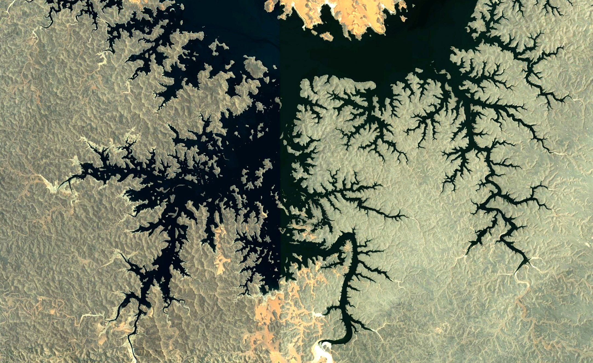Fractals are common enough appearances in nature that art using fractals can easily appear very realistic:

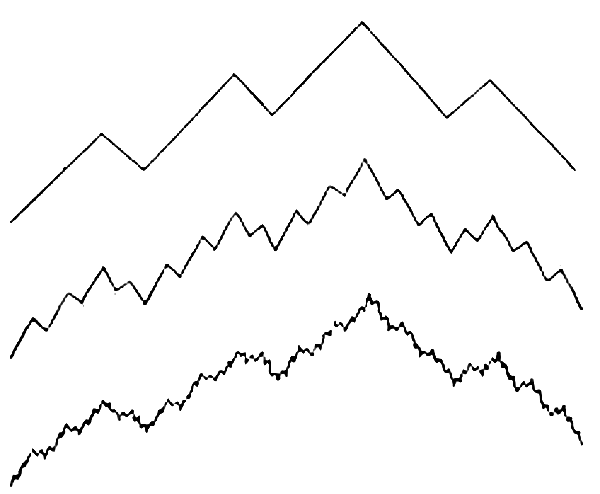
Here's a neat underwater-like scene.
Because the flower inspired me, I tried making a couple of my own:
I also generate many realistic nebulae for my spacescapes using fractal patterns:

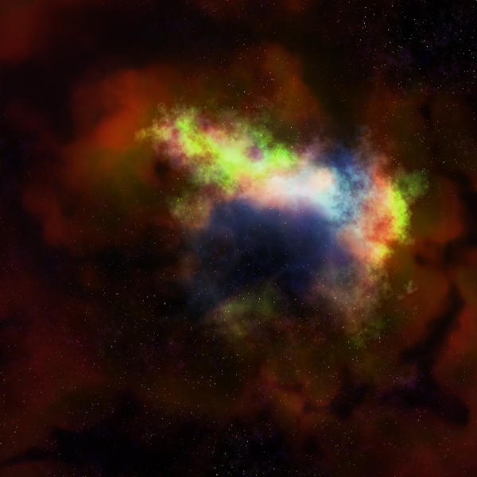

Procedural generation based on fractals is extremely powerful, allowing for realistic world generation in simulations and games:
Siggraph Procedural Terrain Generation:
Terraria..
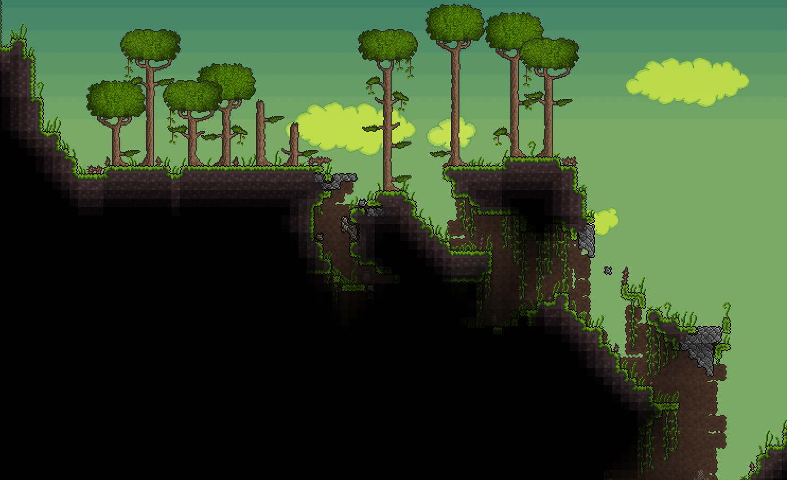
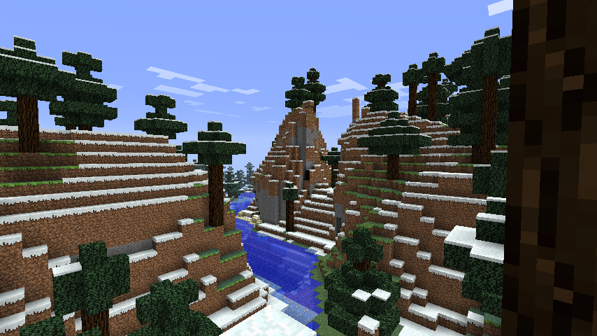
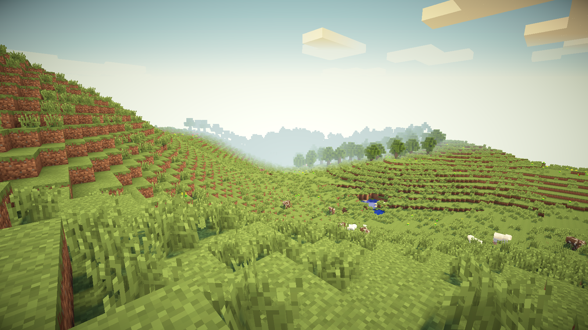
I expect that the universe is a fractal. Both the universe and fractals are infinite, sizeless, and relative. Size doesn't apply to infinity, because infinity is all-encompassing. Relativity does, however. A zoomed-in aspect of a fractal is relatively smaller compared to a more zoomed-out scope. The universe is definitely relative, too... difference/relativity is necessary for change and experience.
At vastly different scales, the structure of neurons and the structure of the universe look remarkably similar..
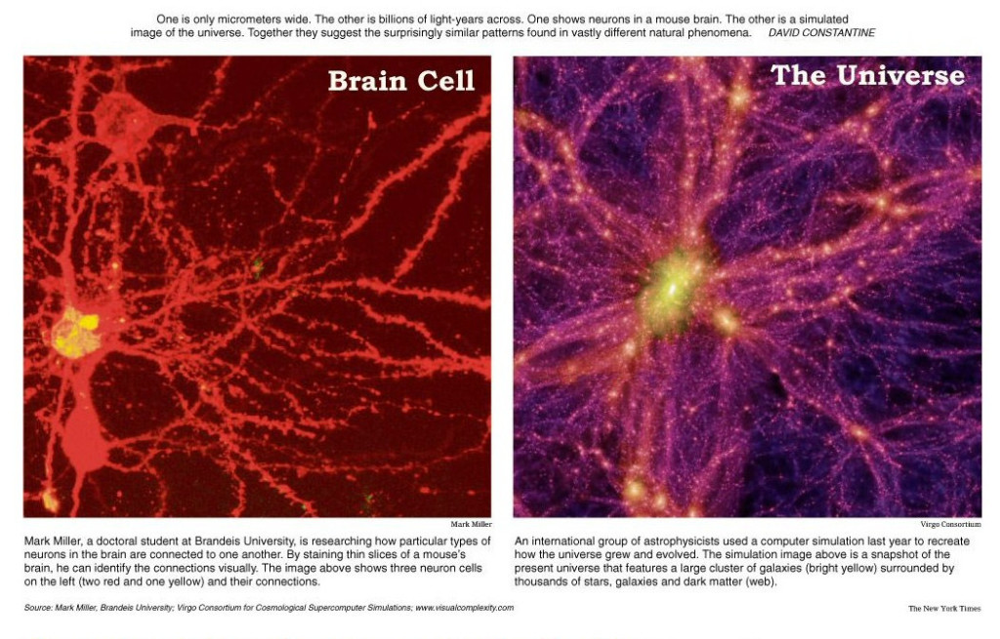Waves
We're all familiar with waves at the beach..
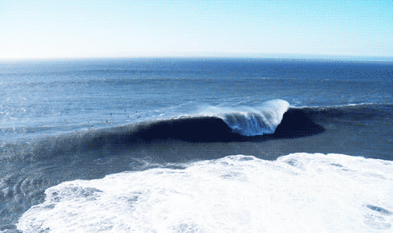
More fundamental, mathematical waves are pretty recognizable as well..
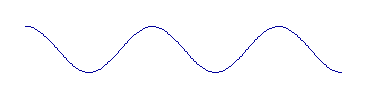
Many things point to the idea that the universe is inherently wavelike:
• Alan Watts understands how vibrations/waves are the essence of the universe.
• Think about vibration... it is a rhythmic jiggle. All vibration is wavelike. All change is motion, and motion is really wavelike. The vibration of the hypothesized quantum strings of string theory would be waves, meaning the universe is composed entirely of vibrating waves..
Fractal Waves
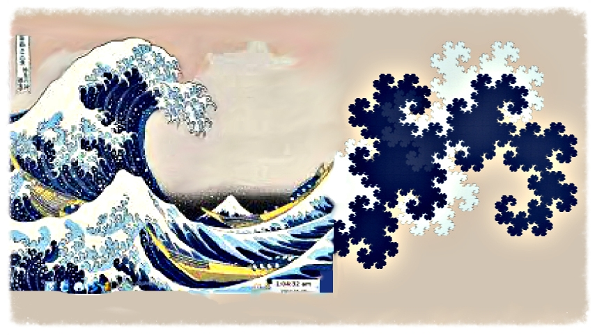
I propose that waves and fractals are one and the same manifestation, the essential form of the universe.
Think about it... fractals are infinite, sizeless, relative; waves are continuous and infinite. These are the key properties of the universe as well. Fractals are nature's elegant method of achieving apparent complexity through actual simplicity. Waves are nature's way of exhibiting difference, of changing constantly. What would a fractal wave be like? It would be infinitely wiggled, in an elegantly simple way. Yet it would also be seemingly complex from a nonholistic, relativity-allowing perspective like that of one's personal senses. Senses, then, make up our entire experience, and they are described embodied solely as vibration. Mountains we perceive, for example, would be a wiggle within the fractal wiggle of rocky formations. Branches are the wiggles within the fractal wiggles of trees. And so as well for each other aspect in existence, on the infinite, universal scale.
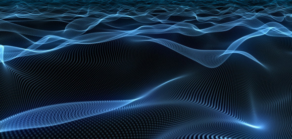
There is mathematical evidence behind the fractality of waves, too. The slope of a sine wave is a cosine wave, and versa. That means that no matter how many times you find the derivative of a waveform, it is another waveform. The pattern is fractal in a meta way.
I think this model provides an excellent insight into why humans have tended to perceive the universe discretely. While in reality the essence of the universe is a waveform..
...we are still at a stage where we perceive these waveforms merely as binary crest\trough dots, like so..
In reality, each thing identifiable thing is smoothly connected. Furthermore, remember there is not just one wave, ofcourse, but a fractal waveform that is your experience of the universe. Although really, that's just one more relativistic and personal perspective; you can understand any of the following perspectives:
0 - there is no waveform as such is just an idea of the mind; there is just the universe
1 - there is only the single waveform, the universal wave, and our sensory experience is its flow
∞ - the waveform of the universe is infinitely fractally divisible into each of the universe's identifiable aspects
You can really see (since this example is so meta) how a discrete explanation (as opposed to a fundamental indiscrete equivalency explanation), like one using the number 7, would be way too arbitrary to describe the essence of the universe. The universe can best be described, by equivalent explanations, as something akin to a fractal wave. What would a fractal wave look like? You have only to look around you, at the universe (yourself).
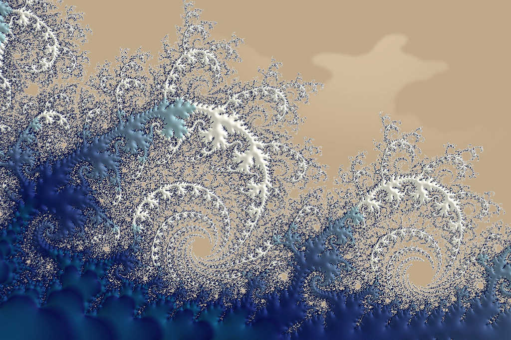